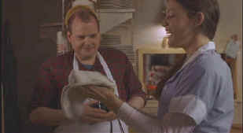

|
Heavy/B+,A- |
|
Columbia/1995/104m/ANA
1.78 |
Ever stand at the supermarket
checkout and wonder about the woman with severe acne working the register?
Remember the car salesman with perspiration staining the armpits of his
sports jacket? You couldn’t wait to get away from him, but did you give
him a second thought afterwards? The guy driving the bus is so fat he
barely fits in the seat, but once you’re off the bus, do you ever wonder
about why he eats so much? The answer to every question is likely to be
no. Well, Heavy is that unusual film that looks at a character much
like these, wonders about his life, and then examines it. It’s a
powerful first film from James Mangold who wrote and directed this quiet
and moving look at those who life passes by without a second glance.
 |
|
It's pizza time. ©Columbia
Tristar |
Pruitt Taylor Vince is Victor. He works in his mother’s restaurant and
bar somewhere in no man’s land upstate New York. Liv Tyler is Callie who
gets a job as a waitress at Pete and Dolly’s Restaurant. Deborah Harry
is Delores who has been waiting tables at the restaurant for fifteen
years. Shelly Winters is Dolly, old, bitter, and totally possessive of
Victor.
Mangold is blessed by some incredible
performances in Heavy. Pruitt Taylor Vince has so few lines. Mostly
he’s shyly looking at people or fumbling with everything except food.
He makes Victor a real person, a person you care about. You want
Victor, despite his obvious problems, to find his bit of sunshine. Liv
Tyler is very beautiful in this film. She displays a remarkable
sensibility toward others. Shelly Winters does some of the best work in
years, calmly creating Dolly with fine control. And Deborah Harry is just
wonderful as the second fiddle behind the bar.
Mangold uses the camera with elegance, revealing
his characters by what surrounds them. Time and again the camera pans the
contents of a room in a horizontal sweep. He does some great work with
several interior car scenes, keeping them from stalling in the static
confined space. Mangold’s
script is at all times respectful of his characters. This is an
outstanding first time effort from the filmmaker.
Look at how clear the background details
are on this DVD. The patterns on the wallpaper are defined with
three-dimensional reality. Newsprint is sharply in focus. The range of
color in each scene is solidly handled. Red glow lighting is maintained
without distorting the picture. The
Dolby Digital 2-Channel sound is clean but flat. The only minor rush is
from low flying overhead airplanes. The music tracks, dialog, and ambient
activity are all clear.
Mangold’s audio commentary provides a great
description of the genesis of Heavy. He quotes a line from a poem
right at the beginning and I almost wish these lines were included as a
prelude introduction. They are quite powerful and explain a lot of what
comes in Heavy. Mangold is very helpful and encouraging to young
filmmakers, offering them tips and hope.
|
|